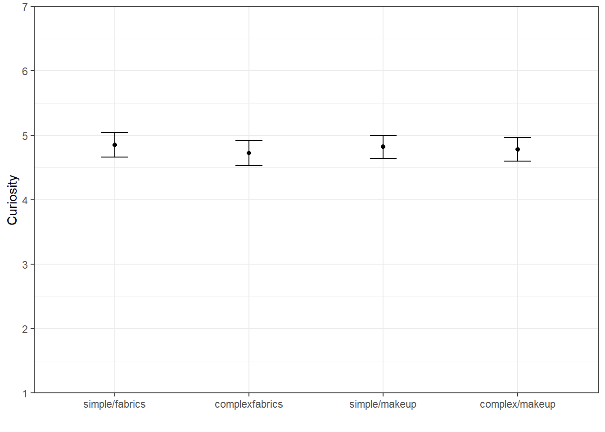
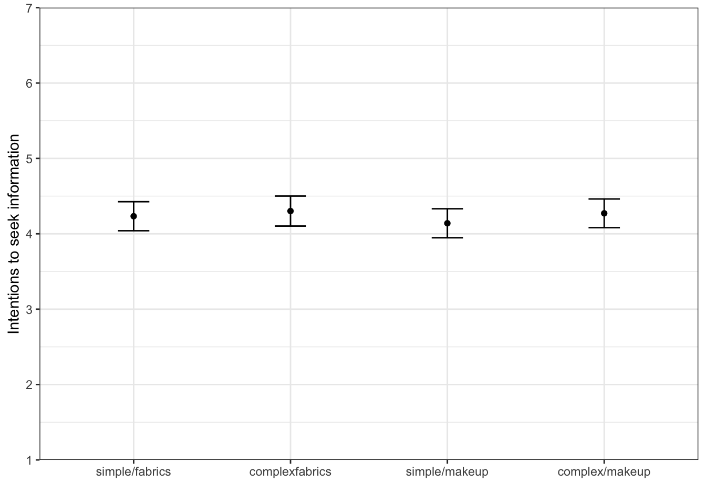
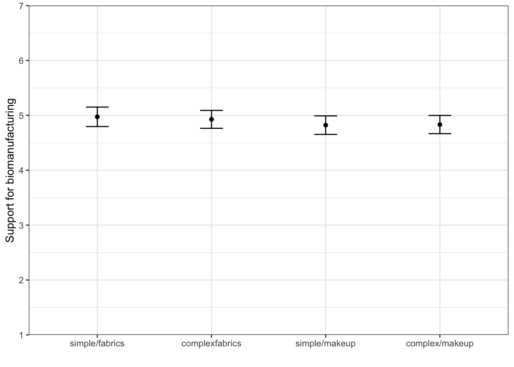
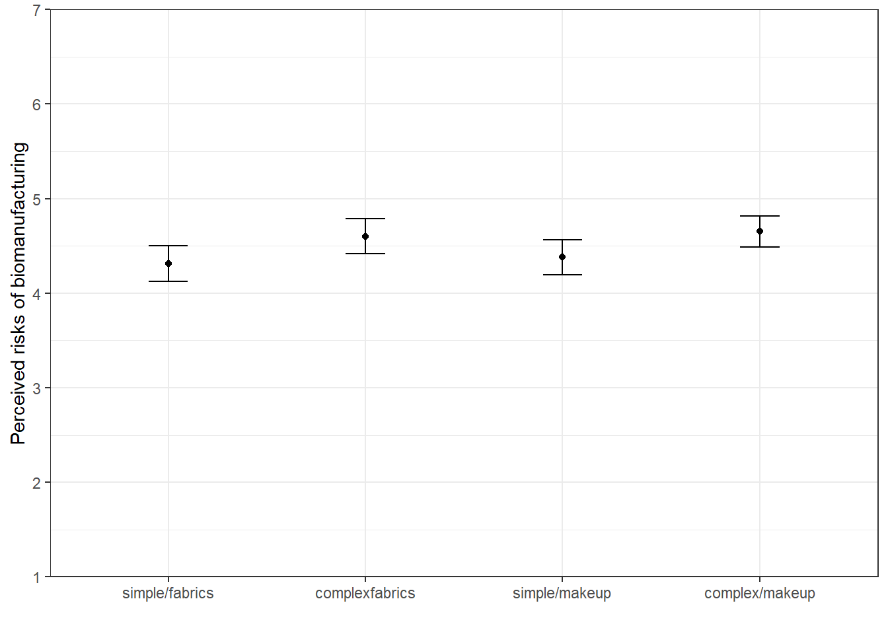
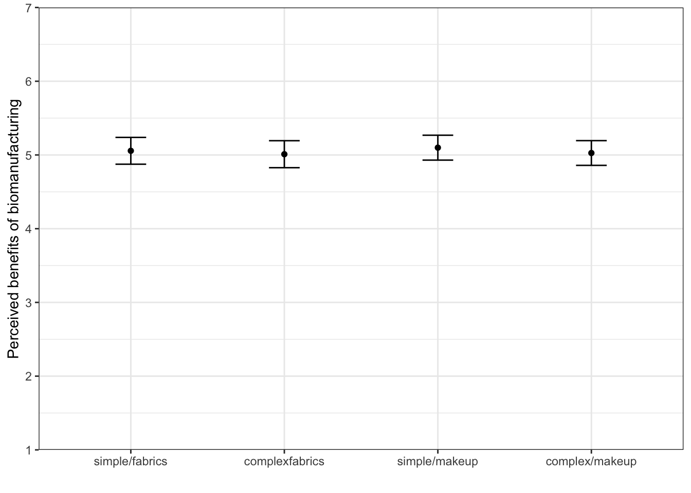

| Characteristic | N = 1,1901 |
|---|---|
| Age | 48 (17) |
| Gender | |
| male | 48% |
| female | 52% |
| Race (Non-White/White) | |
| non-white | 26% |
| white | 74% |
| Education | |
| Less than high school | 7.0% |
| High school graduate | 55% |
| Some college | 38% |
| 2-year degree | 0% |
| 4-year degree | 0% |
| Post-graduate degree | 0% |
| Income | |
| Less than $25,000 | 20% |
| $25,000 to $49,999 | 25% |
| $50,000 to $74,999 | 19% |
| $75,000 to $99,999 | 11% |
| $100,000 to $124,999 | 8.2% |
| $125,000 to $149,999 | 7.9% |
| $150,000 to $174,999 | 4.2% |
| $175,000 to $199,999 | 1.9% |
| $200,000 or more | 3.1% |
| 1 Mean (SD); % | |
BioMADE Experiment: Definition Complexity and Issue
Data were collected by Qualtrics between August 29 and September 13, 2025. Of the final sample of 1,754, Qualtrics designated 1,190 responses as “good completes.”
The table below shows demographic information by experimental condition–none of the differences in the demographics between conditions are significant, which is indicative of random assignment to the experimental conditions.
1 Manipulation Checks
1.1 Perceived difficulty of self-understanding provided definition
The first manipulation check is a question about the perceived difficulty (be the respondent) of understanding the definition provided in the survey. The figure below shows mean levels of perceived difficulty of understanding the definition provided in the survey by simple vs. complex definition. The difference in mean levels of perceived difficulty was significant between the conditions (\(t = -2.67\), \(p = .008\)).

1.2 Perceived difficulty of other-understanding provided definition
The second manipulation check question asked respondents about their perceptions of how difficult it might be for others to understand the provided definition. The figure below shows mean levels of perceived difficulty that others might have understanding the definitions provided in the survey. The difference in mean levels of perceived difficulty was significant between the conditions (\(t = -3.13\), \(p = .002\)).

I was not sure what to do with the question about the terms used in the definition or the open-ended questions, which require coding.
2 Dependent Variables
2.1 Curiosity
Created a variable from the items measuring curiosity in each of the experimental conditions (Q29_1: Q29_4, Q44_1:Q44_4, Q59_1:Q59_4, Q74_1:Q74_4). The table below shows the means and standard deviations for this variable in the whole sample, as well as in the four experimental conditions. Analysis of variance (ANOVA) reveals no significant differences in the mean of curiosity between the conditions (\(F(3, 1185) = 0.34\), \(p = .80\)).

2.2 Information Seeking
Created a variable from the items measuring intentions to seek information in each of the experimental conditions (Q30_1: Q30_5, Q45_1:Q45_5, Q60_1:Q60_5, Q75_1:Q75_5). The table below shows the means and standard deviations for this variable in the whole sample, as well as in the four experimental conditions. There were no significant differences in this outcome variable by experimental condition (\(F(3, 1186) = .51\), \(p = .68\)).

2.3 Support for Biomanufacturing, Federal and State Funding of Research
Created a variable from the items measuring intentions to seek information in each of the experimental conditions (Q31_1: Q31_3, Q46_1:Q46_3, Q61_1:Q61_3, Q76_1:Q76_3). The table below shows the means and standard deviations for this variable in the whole sample, as well as in the four experimental conditions. There were no significant differences in the means of support by experimental condition (\(F(3, 1186) = .75\), \(p = .53\)).
Even though the factor analysis revealed a single factor for this variable, it might be worth considering (for content validity) separating general support for biomanufacturing and support for funding (state and federal) of biomanufacturing research.

2.4 Risks and Benefits
Created a variable from the single items each measuring risk and benefit perceptions in each of the experimental conditions (Q31_4, Q31_5, Q46_4, Q46_5, Q61_4, Q61_5, Q76_4, Q76_5). The table below shows the means and standard deviations for this variable in the whole sample, as well as in the four experimental conditions. There were no significant differences in perceived benefits between conditions (\(F(3, 1183) = .19\), \(p = .90\)). However, there were significant differences in risk perceptions by experimental conditions (\(F(3,1186) = 3.27\), \(p = .02\)).

